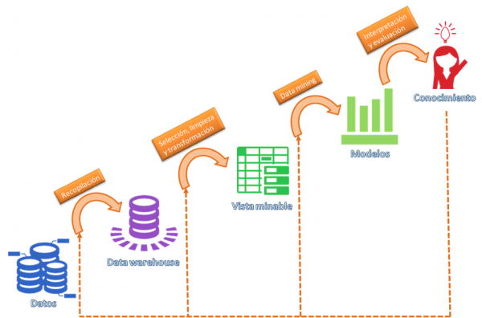

Introducción a Machine Learning

Entre las diversas definiciones de Machine Learning que uno puede encontrar al realizar una búsqueda en internet se pueden identificar:
“Machine Learning es una disciplina científica del ámbito de la Inteligencia Artificial que crea sistemas que aprenden automáticamente. Aprender en este contexto quiere decir identificar patrones complejos en millones de datos. La máquina que realmente aprende es un algoritmo que revisa los datos y es capaz de predecir comportamientos futuros. Automáticamente, también en este contexto, implica que estos sistemas se mejoran de forma autónoma con el tiempo, sin intervención humana. Veamos cómo funciona.”
“El aprendizaje automático es un campo de la informática que tiene como objetivo enseñar a las computadoras cómo aprender y actuar sin ser programado explícitamente. Más específicamente, el aprendizaje automático es un enfoque para el análisis de datos que implica construir y adaptar modelos, que permiten a los programas "aprender" a través de la experiencia. El aprendizaje automático implica la construcción de algoritmos que adaptan sus modelos para mejorar su capacidad de hacer predicciones.”
“Los algoritmos de aprendizaje automático utilizan estadísticas para encontrar patrones en cantidades masivas de datos. Y los datos, aquí, abarcan muchas cosas: números, palabras, imágenes, clics, lo que tienes. Si se puede almacenar digitalmente, se puede alimentar a un algoritmo de aprendizaje automático. El aprendizaje automático es el proceso que impulsa muchos de los servicios que usamos hoy en día: sistemas de recomendación como los de Netflix, YouTube y Spotify; motores de búsqueda como Google y Baidu; feeds de redes sociales como Facebook y Twitter; Asistentes de voz como Siri y Alexa.”
Machine learning e Inteligencia Artificial

Machine learning es un área o rama de la inteligencia artificial, dado que los algoritmos de machine learning sirven como herramienta para llevar a cabo procesos de inteligencia artificial.
Machine learning y análisis estadístico
En cuanto al análisis estadístico los campos de acción de ambas disciplinas son complementarios, incluso los modelos utilizados en los algoritmos de Machine Learning son modelos estadísticos. A su vez los algoritmos de machine learning potencian cualquier análisis estadístico al automatizar procesos que de otro medio no serían viables o serían tediosos como puede ser encontrar relaciones causales entre variables y sus correlaciones así como inferir posibles relaciones ocultas.
Machine learning y data mining
Machine learning usa técnicas de data mining así como de la estadística para explorar patrones subyacentes y construir modelos sobre el vínculo de los datos, el data mining extrae reglas de los datos mientras que el machine learning se encarga de generar un proceso automático para el aprendizaje de dichas reglas y la construcción de modelos que permitan explicar y/o predecir el comportamiento de los datos y las relaciones causales entre variables.
Aplicaciones de machine learning
Las aplicaciones de machine learning son transversales a todas las áreas de conocimiento, sin dudas hay áreas más sensibles como la seguridad (tanto a nivel de protección de datos como análisis de fraude) y el ámbito financiero donde la implementación de métodos rápidos y eficientes implica un salto cualitativo porque no se pueden permitir demoras en la toma de decisiones y análisis de la información. Otras áreas relevantes son el marketing, las aseguradoras, el ámbito de la salud así como también las áreas de procesamiento de lenguaje natural y algunos avances dentro del área de Internet of Things como autos inteligentes, entre otros.
CRISP - DM

CRISP-DM (Cross Industry Standard Process for Data Mining) sintetiza el ciclo de vida de un proyecto de análisis de datos, dividiéndolo en seis fases principales que no son rígidas sino que permiten el avance hacia atrás y hacia adelante en la medida que las necesidades así lo dispongan.
Las seis fases del proceso son:
1. Comprensión del negocio. (Business Understanding). Definición de necesidades del cliente
2. Comprensión de los datos (Data Understanding): Familiarización con los datos para conocerlos, identificando problemas de calidad y realizando hipótesis de posibles correlaciones.
3. Preparación de los datos: selección de tablas, atributos, transformación y limpieza de datos, tratamiento de missing.
4. Modelado: selección técnicas de modelado y ajuste de parámetros.
5. Evaluación del modelo, se revisan los pasos seguidos para crearlo y cuánto se adapta al negocio.
6. Implantación implica la organización de la información, su presentación y disposición para poder transmitir al cliente.
Este proceso es aún utilizado pero también se le critica que es un proceso diseñado hace muchos años que ha perdido vigencia, en su lugar surgen procesos más ágiles que buscan una retroalimentación a medida que avanzan en las etapas, este es el caso de Team Data Science Process es un modelo dinámico que se basa en cuatro etapas: Entendimiento del negocio, Adquisición y entendimiento de los datos, Modelado, Implantación, algunos incluyen una quinta etapa que requeriría la aceptación del cliente. Está ortientado al trabajo en equipo y colaborativo.
Procesos análogos son KDD acrónimo de Knowledge Discovery in Databases :

Consta de cinco etapas
Selección: crear un data set objetivo o focalizarse en un subset de variables o muestras de información.
Pre-procesamiento: limpieza de los datos para que sea consistentes
Tansformación: transformación de los datos usando la reducción o transformación
Data Mining: buscar patrones de interés dependiendo los objetivos buscandos.
Interpretación/Evaluación: interpretación y evaluación de los patrones obtenidos.
SEMMA : impulsado por el SAS Institute y acrónimo de Sample, Explore, Modify, Model, and Assess consta de cinco etapas:

Muestra , selección de datos, que debe ser lo suficientemente grande como para obtener la información necesitada y lo suficientemente pequeña como para poder ser usada eficientemente.
Exploración, cubre el entendimiento de los datos descubriendo relaciones entre variables así como cualquier anormalidad.
Modificación: contiene métodos para seleccionar, crear y transformar variables para preparar el modelado de datos
Modelado: en esta fase el foco está en aplicar varias técnicas de modelo en las variables preparadas para crear modelos deseados.
Evaluación: ultima fase en la que se evalúa el modelo y se muestra la utilidad y fiabilidad del modelo.
KDD y SEMMA pueden verse como procesos análogos con etapas equivalentes, mientras que el CRISP-DM incorpora pasos previos y posteriores de los anteriores procesos, como ser el conocimiento del negocio y le implementación.